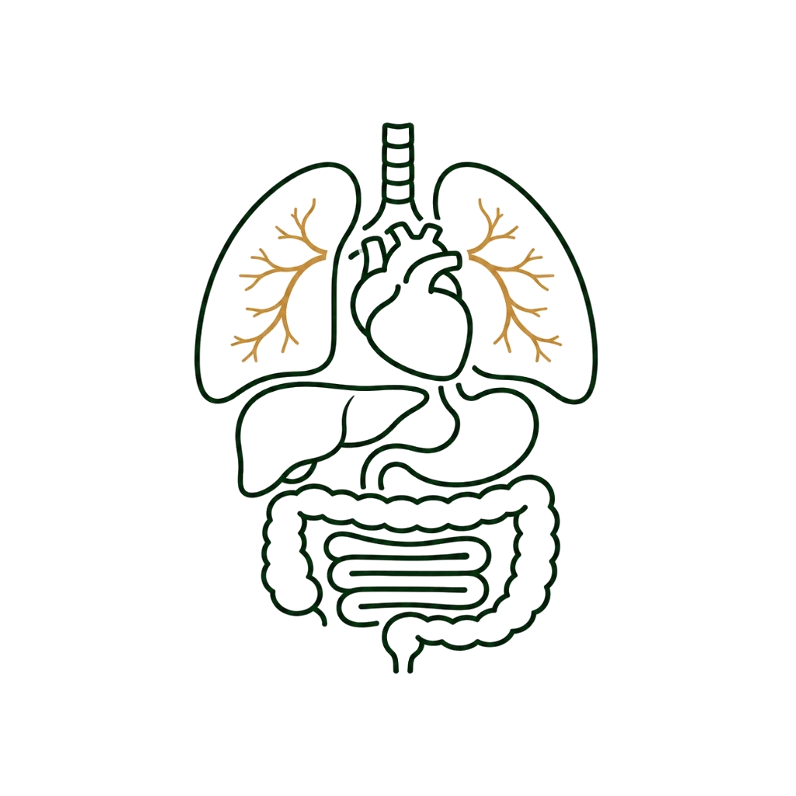

Digestion Clinic
소화 및 순환장애
기혈 순환을 돕고 오장육부의 균형을 바로잡아 속을 편안하게
소화와 순환은 전신 건강의 뿌리입니다.
위장관의 운동성 저하와 전신의 기혈 정체는
만성 소화불량뿐 아니라 손발 저림, 냉증, 부종 등 순환 장애의 근본 원인이 됩니다.
부부한의원은 일시적인 증상 완화를 넘어, 억압되고 막힌 기운을 원활하게 뚫어주고
오장육부의 대사 균형을 복원함으로써 속 편하고 맑은 신체 순환을 되찾아 드립니다.
주요 진료 대상 및 상황
기능성 소화불량 및 만성 위염
위 내시경 상 뚜렷한 이상이 없으나 늘 더부룩하고 체하며, 조금만 먹어도 배가 부르고 속 쓰림이 계속 반복되는 소화기 만성 증상입니다.
역류성 식도염 및 가스 팽만
위산과 음식물이 식도로 역류하여 명치 통증, 가슴 쓰림, 목의 이물감을 유발하고 가스가 차서 항상 복부가 팽창해 불편한 상황입니다.
수족냉증 및 만성 손발 저림
말초 혈액 순환의 정체로 기온과 무관하게 손발이 시리고 차가우며, 혈행 저하로 인해 손발 끝이 자주 찌릿하게 저리는 증상입니다.
만성 부종 및 전신 순환 장애
체내 수분 대사와 림프 및 정맥 순환 정체로 인해 아침저녁으로 얼굴이나 손발이 쉽게 붓고, 몸이 항상 천근만근 무거운 피로를 유반하는 질환입니다.
부부한의원 소화·순환 집중 치료법
위장관 운동성 복원을 위한 침 치료
소화기 평활근의 정체된 연동 운동을 활성화시키는 주요 경혈점에 침 및 전침 시술을 시행하여 소화관의 소통을 돕고 체기를 해소합니다.
맞춤형 약침 치료
통증과 순환에 도움이 되는 녹용 약침에 피로 누적으로 인한 회복력, 기능 저하에 도움이 되는 자하거(태반) 약침까지 적절하게 활용하여 효과적인 치료를 도모합니다.
한약 처방 (맞춤한약 혹은 첩약건강보험 2차 시범사업)
저하된 위장 점막 재생을 돕고 말초 순환 정체를 해소하며, 오장육부의 대사 열 불균형을 다스려 저하된 기력을 함께 돋우는 맞춤형 한약을 처방합니다.
소화·순환 클리닉 진행 프로세스
안내 데스크 예약 확인, 접수 및 문진표 작성
원장님 진료를 통해 체질 판단, 위장 연동 운동 능력 평가 및 전신 순환 정체 요인 분석
온열 요법 및 침, 약침 복합 치료와 개인 맞춤 한약 처방 조제
치료 효과를 유지하고 재발을 방지하기 위한 체질별 식이 요법 가이드라인 교육